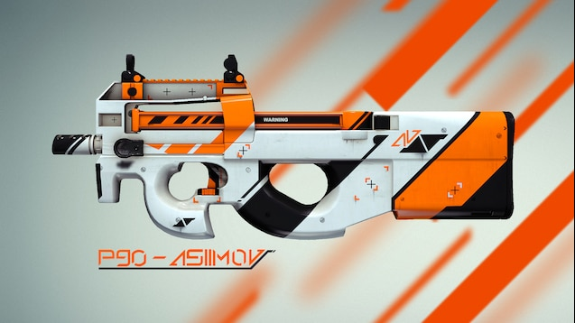
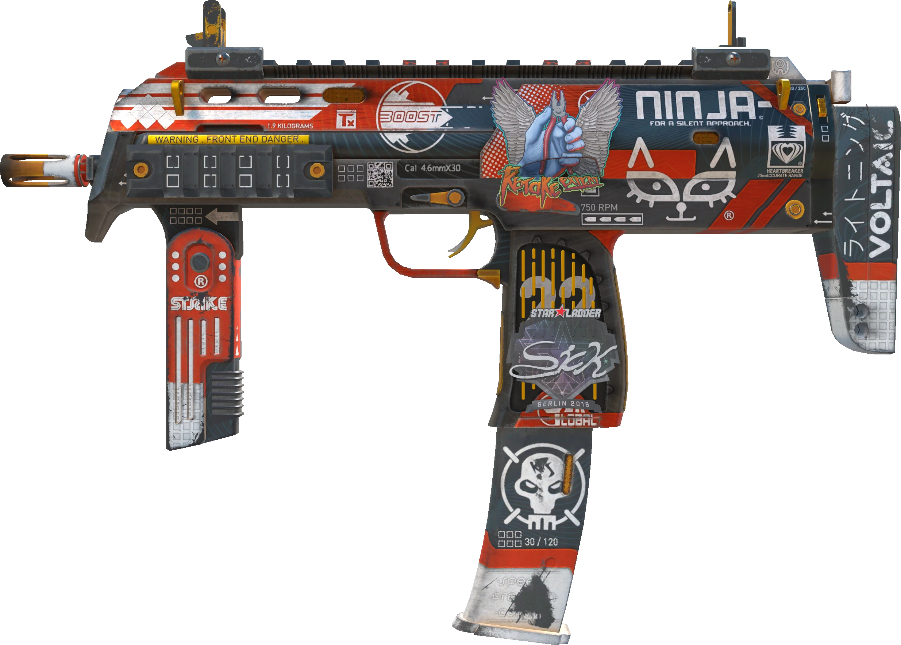

SMG Skin Market Overview
Submachine guns (SMGs) occupy a unique position in the CS:GO skin economy. While they typically see less play than rifles or pistols, they're frequently used in anti-eco rounds, offering specific investment opportunities for budget-conscious collectors.

SMG Skin Rarity Distribution
SMGs feature a wide range of skin rarities, from common Consumer Grade to rare Covert items. The distribution above shows that while high-tier SMG skins exist, they're less common than their rifle counterparts, potentially creating unique market opportunities.
P90 Skins
The P90 is one of the most recognizable SMGs in CS:GO, known for its high rate of fire and large magazine capacity. Its skins often feature distinctive designs that stand out in the marketplace.
Notable P90 Skins:
- Death by Kitty
- Released in the eSports 2013 Case
- Distinctive pink cat pattern
- Limited supply due to age of the case
- Asiimov
- Part of the popular Asiimov series
- Consistent demand due to recognizable design
- White, black, and orange futuristic aesthetic
- Run and Hide
- Detailed artwork featuring a fox
- Part of the Prisma 2 Collection
- Vibrant colors with nature theme
MP7 & MP5-SD Skins
The MP7 and its alternative, the MP5-SD, are versatile SMGs used by both teams. Their affordable price point in-game makes them common choices in early rounds and anti-eco situations.
Notable MP7 & MP5-SD Skins:
- MP7 Nemesis
- Released in the Falchion Case
- Aggressive red and black design
- Popular for its clean, menacing aesthetic
- MP7 Bloodsport
- Racing-inspired design with red and black color scheme
- Part of the Spectrum 2 Case
- High visibility in gameplay due to vibrant colors
- MP5-SD Phosphor
- Glowing blue cyberpunk design
- Part of the Prisma 2 Collection
- One of the more sought-after MP5-SD skins
UMP-45 Skins
The UMP-45 gained popularity due to its favorable damage output and economic efficiency. It's frequently used in anti-eco rounds and force buys, giving its skins good visibility.
Notable UMP-45 Skins:
- Blaze
- Part of The Dust Collection
- Flame pattern similar to the Desert Eagle Blaze
- Value increased after collection was discontinued
- Primal Saber
- Tiger-inspired design with vibrant colors
- Released in the Chroma 3 Case
- Distinctive orange and blue color scheme
- Exposure
- Unique X-ray style design
- Part of the Prisma 2 Collection
- Glowing blue elements on black background
Case Hardened Blue Patterns

Like pistols and knives, some SMGs (particularly the MAC-10) feature Case Hardened skins with variable blue patterns. While not as valuable as knife or AK-47 blue gems, MAC-10 Case Hardened skins with high blue percentages can command 2-3x the market price.
Value-Adding Sticker Combinations

Strategic sticker placement on SMGs can significantly increase their value. Matching team stickers or complete tournament sets are particularly desirable. Due to their lower base price, SMGs with valuable stickers can sometimes derive 80%+ of their total value from the stickers alone.
Other Notable SMGs
- MAC-10
- Neon Rider (vibrant purple and pink design)
- Stalker (wolf-themed artwork)
- Heat (gradient orange and red pattern)
- MP9
- Bulldozer (rare bright yellow design)
- Hot Rod (glossy red finish)
- Hydra (water serpent artwork)
- PP-Bizon
- High Roller (playing card pattern)
- Judgement of Anubis (Egyptian-themed artwork)
- Blue Streak (simple yet clean blue design)
Float Value Impact on SMGs
Float values affect different SMG skins variously. For example, the UMP-45 Blaze shows minimal visual difference between Factory New and Minimal Wear, making the latter a better value investment. In contrast, the MAC-10 Fade shows noticeable wear even at Minimal Wear condition.
SMG Investment Strategy
When considering SMG skins for investment, keep these factors in mind:
- Meta Changes
- Game balance updates can affect weapon popularity
- UMP-45 demand increased after its buff, then decreased after nerf
- MP5-SD as a newer weapon may see changing usage rates
- Price Advantage
- SMG skins typically cost less than rifle equivalents
- Lower investment floor allows for greater diversification
- Some rare SMG skins have shown surprising appreciation
- Collection Rarity
- SMGs from discontinued collections can see significant growth
- Limited-time operation drops become increasingly scarce
- Case saturation affects potential for newer skin appreciation
Trading Platforms for SMG Skins

While the Steam Community Market offers convenience, third-party platforms often provide better deals for SMG skins, especially for transaction fees. Always compare prices across multiple platforms before purchasing investment-grade SMG skins.